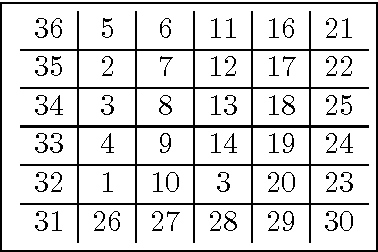

Prime Grid Labeling
Overview
Generation of an n by m matrix numbered 1 to n*m where each item in the matrix is neighbored only by numbers coprime to the item (a prime grid labeling). This can be easily mapped to find the prime labeling of a graph.
This project is a collaborative effort by 6 undergraduate DSU students.
Impetus
After a research presentation, a professor mentioned the idea of graph labeling in the context of a matrix and I thought it would be an interesting project to work on with my friends and fellow DSU students.
- Interest in graph theory and algorithms associated with graph theory.
- Desire to work collaboratively with other passionated students.
- Challenge of furthering the field of graph prime labeling.
Usage & Output
Detailed more specifically in the README of the repo.
- Usage: Adjust
START_N and END_N for lower bound and upper bound of grids to generate and run runner.py
- Output: All matrices are output into
grids directory

Skills Developed & Applied
- Python Programming: Enhanced proficiency in Python, particularly with self-created modules and object-oriented principles
- Mathematical Reasoning: Deepened understanding of structure of graphs and graph algorithms, along with furthering the field of graph theory.
- Collaboration and Version Control: Worked closely with 5 other students on multiple versions of the software at the same time, utilizing Git for version control. Communicated regularly about project requirements and ideas with other members.
- Problem-Solving: Applied logical reasoning to translate mathematical theory into executable code.